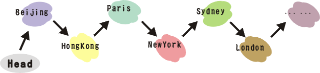

global objects and functions
global objects and functions
 pointers
pointers
 introduction to a debugger
introduction to a debugger
¡@
 Create
directories "linkedlist"
and "transpose" and "task" under ~/comp151/lab03
Create
directories "linkedlist"
and "transpose" and "task" under ~/comp151/lab03
 unzip the file using command "unzip"
unzip the file using command "unzip"
e.g., unzip LinkedList.zip
¡@

and a sequence of requested accesses :Sydney, Rome, Rome, Rome, Rome, HongKong, Moscow, ... ...
 The cost of accessing city is the number of
cities that have to be traversed to get to that city. Given a sequence
of requested accesses, our objective is to minimize the cost of
accessing the cities in the sequence in the given order.
The cost of accessing city is the number of
cities that have to be traversed to get to that city. Given a sequence
of requested accesses, our objective is to minimize the cost of
accessing the cities in the sequence in the given order.
 While processing the accesses we are
allowed to modify the list as follows: after accessing a city in the list, we
can move it anywhere we want that is closer to the front of the list.
While processing the accesses we are
allowed to modify the list as follows: after accessing a city in the list, we
can move it anywhere we want that is closer to the front of the list.
¡@
 Transpose
Transpose
--After accessing city 'A', move city
'A' one unit forward towards the front of the list
--e.g. after accessing Sydney, the list
becomes
¡@
 LinkedList
LinkedList
--compile LinkedList using the command "gmake"
--run the program
--"access.txt" contains a sequence
of requested accesses
¡@
--notice how "extern" in main.cpp
is used to access the global objects and function.
--notice how cities are inserted into the list
¡@
 Transpose
Transpose
--List::Insert is now public so as to insert node at run time
--List::Delete added to delete node at run time
--compile the program
--when you run the program, it hangs.
Let's figure out what happened using the debugger 'ddd'
-- notice the '-g' parameter in g++
-- what is memory leak?
-- what is dangling pointer?
add your student name, student id, email,
and lab section in the very beginning of the file as a comment
place your work
main.cpp
List.h
List.cpp
resource.h
resource.cpp
city.txt
Makefile
under ~/comp151/lab03/task
¡@